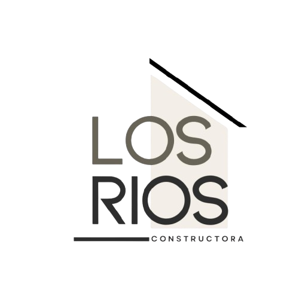

<style>
/* =========================================================
   BRANDING / THEME — Constructora Los Ríos
   Paleta y tokens de diseño
   ========================================================= */
:root{
  /* Colores base */
  --lr-ink:        #2E2E2E;  /* texto principal */
  --lr-muted:      #686458;  /* texto secundario / bordes */
  --lr-accent:     #917D64;  /* acento principal */
  --lr-accent-2:   #A7A376;  /* acento secundario */
  --lr-soft:       #EBE0D0;  /* fondo suave */
  --lr-white:      #FFFFFF;

  /* Tokens de componentes */
  --lr-bg:         #FFFFFF;
  --lr-border:     #D9D4CB;
  --lr-focus:      rgba(145,125,100,.45); /* halo de foco */
  --lr-shadow:     0 6px 20px rgba(46,46,46,.08);
}

/* =========================================================
   BASE / GLOBAL
   Tipografía y colores por defecto
   ========================================================= */
html, body{
  font-family: ui-sans-serif, system-ui, -apple-system, "Segoe UI",
               Roboto, "Helvetica Neue", Arial, "Noto Sans", sans-serif;
  color: var(--lr-ink);
  background: var(--lr-bg);
}

/* =========================================================
   LAYOUT: HEADER
   ========================================================= */
.main-header {
  background-color: #f5f5f5;                /* gris claro elegante */
  border-bottom: 1px solid #ddd;
  position: sticky;
  top: 0;
  width: 100%;
  z-index: 1000;
}

.container {
  max-width: 1200px;
  margin: 0 auto;
  padding: 0.8rem 1rem;
  display: flex;
  justify-content: space-between;
  align-items: center;
}

/* Logo */
.logo img {
  height: 60px;
  width: auto;
}

/* Navegación header */
.nav-links {
  display: flex;
  gap: 2rem;
}
.nav-links a {
  text-decoration: none;
  font-family: 'Helvetica Neue', Arial, sans-serif;
  font-weight: 500;
  color: #333;                                /* gris oscuro sobrio */
  transition: color 0.3s ease;
}
.nav-links a:hover {
  color: #7a7a7a;                             /* gris medio elegante */
}

/* Toggle menú (mobile) */
.menu-toggle {
  display: none;
  font-size: 1.8rem;
  cursor: pointer;
}

/* =========================================================
   LAYOUT: FOOTER
   ========================================================= */
.main-footer {
  background-color: #f5f5f5;
  border-top: 1px solid #ddd;
  padding: 2rem 1rem;
  font-family: 'Helvetica Neue', Arial, sans-serif;
  font-size: 0.9rem;
  color: #333;
}

.footer-container {
  max-width: 1200px;
  margin: 0 auto;
  display: flex;
  justify-content: space-between;
  align-items: flex-start;
  flex-wrap: wrap;
  gap: 2rem;
}

.footer-logo img {
  height: 50px;
  margin-bottom: 0.5rem;
}

.footer-logo p {
  font-size: 0.85rem;
  color: #555;
}

.footer-links {
  display: flex;
  flex-direction: column;
  gap: 0.5rem;
}
.footer-links a {
  text-decoration: none;
  color: #333;
  transition: color 0.3s ease;
}
.footer-links a:hover { color: #7a7a7a; }

.footer-contact p {
  margin: 0.3rem 0;
  color: #555;
  font-size: 0.85rem;
}

/* =========================================================
   COMPONENTE: Cotizador (contenedor principal)
   ========================================================= */
.cotizador { 
  max-width: 1200px;
  margin: 2rem auto;
  padding: 0 1rem; 
  font-family: 'Helvetica Neue', Arial, sans-serif;
  color: #333;
}
.cotizador h2 {
  font-size: 1.4rem;
  margin-bottom: 1rem;
}

/* =========================================================
   COMPONENTE: Acordeón (details/summary)
   ========================================================= */
.acc-item { 
  border: 1px solid #ddd;
  border-radius: 10px;
  background: #f7f7f7; 
}
.acc-item + .acc-item { margin-top: 1rem; }
.acc-item > summary {
  cursor: pointer;
  list-style: none;
  padding: 1rem 1.25rem;
  font-weight: 600;
}
.acc-item > summary::-webkit-details-marker { display: none; }
.acc-item[open] > summary { border-bottom: 1px solid #e5e5e5; }

.acc-grid { 
  display: grid;
  gap: 1.25rem;
  padding: 1.25rem; 
  grid-template-columns: 1fr 360px; 
}
@media (max-width: 900px){
  .acc-grid{ grid-template-columns: 1fr; }
}

/* =========================================================
   FORMULARIOS
   ========================================================= */
.form-grid {
  display: grid;
  gap: 1rem;
  grid-template-columns: repeat(2, minmax(0,1fr));
}
@media (max-width: 600px){
  .form-grid{ grid-template-columns: 1fr; }
}

.field .label { 
  display: block;
  font-size: .9rem;
  margin-bottom: .4rem;
  color: #555;
}

/* Alinear título + botón ayuda */
.field .label.flex-between{
  display: flex;
  align-items: center;
  gap: 8px;
}

/* Selects */
select {
  width: 100%;
  padding: .6rem .7rem;
  border: 1px solid #d6d6d6;
  border-radius: 10px;
  background: #fff;
}

/* Radios estilo pill */
.options { display: flex; flex-wrap: wrap; gap: .5rem; }
.radio-chip {
  position: relative;
  display: inline-flex;
  align-items: center;
  gap: .5rem;
  padding: .55rem .8rem;
  border: 1px solid #d6d6d6;
  border-radius: 999px;
  background: #fff;
  cursor: pointer;
  transition: all .2s ease;
}
.radio-chip input {
  position: absolute;
  inset: 0;
  opacity: 0;
  cursor: pointer;
}
.radio-chip.active,
.radio-chip:hover {
  border-color: #999;
  background: #f0f0f0;
}

/* =========================================================
   PREVIEW (tarjeta lateral)
   ========================================================= */
.preview { 
  border: 1px solid #ddd;
  border-radius: 12px;
  background: #fff; 
  display: flex;
  flex-direction: column;
  overflow: hidden;
}
.preview-img {
  background: #fafafa;
  border-bottom: 1px solid #eee;
  display: flex;
  align-items: center;
  justify-content: center;
  min-height: 180px;
}
.preview-img img {
  max-width: 100%;
  max-height: 220px;
  object-fit: contain;
}
.preview-info { padding: 1rem; display: grid; gap: .35rem; }
.preview-info h3 { margin: 0; font-size: 1.05rem; }
.preview-info .precio { font-weight: 700; font-size: 1.1rem; }

.btn-add {
  margin-top: .4rem;
  padding: .6rem .9rem;
  border: none;
  border-radius: 10px;
  cursor: pointer;
  background: #222;
  color: #fff;
  transition: opacity .2s ease;
}
.btn-add:hover { opacity: .9; }

/* Badge helper */
.badge { font-size: .8rem; color: #666; }

/* =========================================================
   BOTONES DE AYUDA (?)
   ========================================================= */
.help-btn {
  display: none;             /* se muestra al interactuar con el select */
  background-color: #f0f0f0;
  border: 1px solid #ccc;
  color: #555;
  font-size: 0.8rem;
  font-weight: bold;
  border-radius: 50%;
  width: 22px;
  height: 22px;
  line-height: 18px;
  text-align: center;
  cursor: pointer;
  transition: all 0.2s ease;
  padding: 0;
  margin-left: 8px;
}
.help-btn:hover {
  background-color: #e0e0e0;
  color: #000;
  border-color: #999;
}

/* Fila para select + botón ayuda */
.control-inline{
  display: flex;
  align-items: center;
  gap: .5rem;
}
.control-inline select{ flex: 1; }
.control-inline .help-btn{
  display: none;
  margin-left: 0;
}

/* =========================================================
   MODALES (overlay full screen)
   * Declarar los .modal fuera del .wiz-track (fixed correcto)
   ========================================================= */
.modal{
  display: none;
  position: fixed;
  inset: 0;
  z-index: 2000;
  background: rgba(0,0,0,.4);
}
.modal-content{
  background: #fff;
  margin: 10vh auto;
  padding: 20px;
  border: 1px solid #888;
  width: 80%;
  max-width: 980px;
  border-radius: 10px;
}

/* Botón cerrar modal */
.close {
  color: #aaa;
  float: right;
  font-size: 28px;
  font-weight: bold;
  cursor: pointer;
}
.close:hover,
.close:focus {
  color: #000;
  text-decoration: none;
}

/* =========================================================
   WIZARD (viewport, track, progreso, tabs y navegación)
   ========================================================= */

/* Viewport/Track básicos */
.wiz-viewport { overflow: hidden; position: relative; }
.wiz-track    { display: flex; transition: transform .4s ease; width: 100%; will-change: transform; }
.step         { min-width: 100%; flex: 0 0 100%; padding: 1rem 0; }

/* Progreso (barra + lista de pasos) */
.wiz-progress      { margin-bottom: .75rem; position: relative; z-index: 1; }
.wiz-progress-bar  { height: 6px; background: #eee; border-radius: 999px; overflow: hidden; position: relative; z-index: 0; }
#wiz-progress-fill { display: block; height: 100%; width: 0%; background: #222; transition: width .3s ease; }

/* Lista de pasos (como píldoras con botones .step-tab) */
.wiz-steps {
  position: relative; z-index: 2; pointer-events: auto;
  display: flex; flex-wrap: wrap; gap: .5rem;
  margin: .5rem 0 0; padding: 0; list-style: none;
  font-size: .85rem; color: #777;
}
.wiz-steps li { margin: 0; padding: 0; }
.wiz-steps li.active { color: #222; font-weight: 600; }

/* Botones de paso (píldoras) */
.step-tab {
  all: unset; /* limpiamos estilos nativos (usamos role/aria en HTML) */
  display: inline-flex;
  align-items: center;
  gap: .4rem;
  padding: .45rem .8rem;
  border: 1px solid var(--lr-border);
  background: var(--lr-white);
  color: var(--lr-muted);
  border-radius: 999px;
  cursor: pointer;
  line-height: 1;
  transition: box-shadow .2s ease, background-color .2s ease, color .2s ease, border-color .2s ease;
}
.step-tab:hover {
  background: #f8f8f8;
  border-color: #cfcfcf;
  color: var(--lr-ink);
}
.step-tab:focus-visible {
  outline: 2px solid var(--lr-focus);
  outline-offset: 2px;
}
.step-tab.active,
.wiz-steps li.active .step-tab {
  background: var(--lr-ink);
  border-color: var(--lr-ink);
  color: #fff;
  box-shadow: var(--lr-shadow);
}

/* Navegación inferior */
.wiz-nav {
  display: flex;
  justify-content: flex-end;
  gap: .5rem;
  margin-top: 1rem;
}
.btn{
  padding: .6rem .9rem;
  border: 1px solid #ccc;
  border-radius: 10px;
  background: #f5f5f5;
  cursor: pointer;
}
.btn-dark{ background: #222; color: #fff; border-color: #222; }
.btn:disabled{ opacity: .5; cursor: not-allowed; }

/* =========================================================
   UTILIDADES Y ACCESIBILIDAD
   ========================================================= */
/* Foco accesible en items clicables extra (por si se navega con Tab) */
.wiz-steps li { outline: none; }
.wiz-steps li:focus-visible {
  outline: 2px solid var(--lr-focus);
  border-radius: 6px;
}

/* =========================================================
   RESPONSIVE
   ========================================================= */

/* Header responsive */
@media (max-width: 768px) {
  .nav-links {
    position: absolute;
    top: 70px;
    right: 0;
    background: #f5f5f5;
    flex-direction: column;
    gap: 1rem;
    width: 200px;
    padding: 1rem;
    border-left: 1px solid #ddd;
    display: none;
  }
  .nav-links.active { display: flex; }
  .menu-toggle { display: block; }
}

/* Footer responsive */
@media (max-width: 768px) {
  .footer-container {
    flex-direction: column;
    align-items: center;
    text-align: center;
  }
  .footer-links { flex-direction: row; gap: 1rem; }
}

/* Tabs wizard responsive */
@media (max-width: 640px){
  .step-tab { padding: .4rem .65rem; font-size: .9rem; }
}


</style>

<header class="main-header">
    <div class="container">
        <a href="/" class="logo">
            
        </a>
        <nav class="nav-links">
            <a href="#">Inicio</a>
            <a href="#">Nosotros</a>
            <a href="#">Proyectos</a>
            <a href="#">Contacto</a>
        </nav>
        <div class="menu-toggle" id="menu-toggle">
            ☰
        </div>
    </div>
</header>

<section class="cotizador">
  <h2>Configura tu proyecto</h2>

  <!-- ===== Wizard: Progreso ===== -->
  <div class="wiz-progress" aria-label="Progreso">
    <div class="wiz-progress-bar"><span id="wiz-progress-fill"></span></div>

    <ol class="wiz-steps" id="wiz-steps" role="tablist" aria-label="Pasos del cotizador">
      <li role="presentation">
        <button type="button" class="step-tab active" data-step="0" aria-controls="step-emplazamiento"
          aria-selected="true" role="tab">
          Emplazamiento
        </button>
      </li>
      <li role="presentation">
        <button type="button" class="step-tab" data-step="1" aria-controls="step-radier" aria-selected="false" role="tab">
          Radier
        </button>
      </li>
      <li role="presentation">
        <button type="button" class="step-tab" data-step="2" aria-controls="step-Elevacion" aria-selected="false"
          role="tab">
          Elevaciones/Estructura
        </button>
      </li>
      <li role="presentation">
        <button type="button" class="step-tab" data-step="3" aria-controls="step-ventanas" aria-selected="false"
          role="tab">
          Ventanas
        </button>
      </li>
      <li role="presentation">
        <button type="button" class="step-tab" data-step="4" aria-controls="step-resumen" aria-selected="false"
          role="tab">
          Resumen
        </button>
      </li>
    </ol>
  </div>

  <!-- ===== Wizard: Viewport/Track ===== -->
  <div class="wiz-viewport">
    <div class="wiz-track" id="wiz-track">

      <!-- ===== PASO 1: Emplazamiento ===== -->
      <section class="step" data-title="Emplazamiento" id="step-emplazamiento">
        <details class="acc-item" open>
          <summary>Emplazamiento</summary>

          <div class="acc-grid">
            <form id="form-emplazamiento" class="form-grid" autocomplete="off">
            

              <div class="field">
                <div class="control-inline"> 
                  <select id="tipo-emplazamiento" required>
                    <option value="">Selecciona…</option>
                    <option value="curvat">Considerar curva del terreno</option>
                    <option value="maquinariat">Ralizar trabajos de maquinaria</option>
                    <option value="otros">Otros</option>
                  </select>
                  <button id="help-empla" class="help-btn" type="button" aria-label="Ayuda empla">?</button>
                </div>
                
              </div>

      
            </form>
            
          </div>
        </details>
      </section>

      <!-- ===== PASO 2: Radier ===== -->
      <section class="step" data-title="Radier" id="step-radier">
        <details class="acc-item" open>
          <summary>Radier</summary>

          <div class="acc-grid">
            <form id="radier-form" class="form-grid" autocomplete="off">

              <!-- Tipo de radier -->
              <div class="field">
                <label class="label flex-between">
                  <span>Tipo de radier</span>
                  <button id="help-radier" class="help-btn" type="button" aria-label="Ayuda radier">?</button>
                </label>

                

                <select id="tipo-radier" required>
                  <option value="">Selecciona…</option>
                  <option value="rnormal">Radier normal</option>
                  <option value="raislapol">Radier con aislación de Aislapol</option>
                  <option value="rradiante">Radier losa radiante</option>
                  <option value="otros">Otros</option>
                </select>
              </div>

              <!-- Tipo de hormigón -->
              <div class="field">
                <label class="label flex-between">
                  <span>Tipo de hormigón</span>
                  <button id="help-hormigon" class="help-btn" type="button" aria-label="Ayuda hormigón">?</button>
                </label>

               

                <select id="tipo-hormigon" required>
                  <option value="">Selecciona…</option>
                  <option value="h10">H10</option>
                  <option value="h15">H15</option>
                  <option value="h20">H20</option>
                  <option value="h25">H25 / HN25</option>
                  <option value="h30">H30</option>
                  <option value="ha">Hormigón armado (H25/H30)</option>
                  <option value="otros">Otros</option>
                </select>
              </div>

              <!-- Dosificación (Cono) -->
              <div class="field">
                <label class="label flex-between">
                  <span>Dosificación (Cono de Abrams)</span>
                  <button id="help-dosi" class="help-btn" type="button" aria-label="Ayuda dosificación">?</button>
                </label>

               

                <select id="tipo-dosificacion" required>
                  <option value="">Selecciona…</option>
                  <option value="cono-5">Cono 5 cm</option>
                  <option value="cono-7">Cono 7 cm</option>
                  <option value="cono-10">Cono 10 cm</option>
                  <option value="otros">Otros</option>
                </select>
              </div>
            </form>
          </div>
        </details>
      </section>
      <!-- ===== PASO 3: Elevacion ===== -->
      <section class="step" data-title="elevacion" id="step-elevacion">
        <details class="acc-item" open>
          <summary>Elevaciones / Estructura</summary>

          <div class="acc-grid">
            <form id="form-elevacion" class="form-grid" autocomplete="off">
            

              <div class="field">
                <label class="label flex-between">
                  <span>Tipo de Elevacion</span>
                 </label> 
                <div class="control-inline"> 
                 
                  
                  <select id="tipo-elevacion" required>
                    <option value="">Selecciona…</option>
                    <option value="Emadera">Madera</option>
                    <option value="Evulco">Vulcometal</option>
                    <option value="Esip">Panel SIP</option>
                    <option value="Esolido">Muro solido</option>
                    <option value="otros">Otros</option>
                  </select>
                  <button id="help-elevacion" class="help-btn" type="button" aria-label="Ayuda Elevacion">?</button>
                </div>
                
              </div>
              

              <div class="field" id="wrap-madera" style="display:none; " >
                <label class="label">Tipo de madera</label>
                <div class="control-inline">
                  <select id="tipo-madera" required>
                    <option value="">Selecciona…</option>
                    <option value="3pnormal">2x3 en pino normal</option>
                    <option value="4pnormal">2x4 en pino normal</option>
                    <option value="3impreg">2x3 en pino impregnado</option>
                    <option value="4impreg">2x4 en pino impregnado</option>
                    <option value="otros">Otros</option>
                  </select>
                  <button id="help-madera" class="help-btn" type="button" aria-label="Ayuda madera">?</button>
                </div>
              </div>
              <!-- Tipo de Vulcometal -->
              <div class="field" id="wrap-vulco" style="display:none;">
                <label class="label">Tipo de Vulcometal</label>
                <div class="control-inline">
                  <select id="tipo-vulco" required>
                    <option value="">Selecciona…</option>
                    <option value="C60x38x0.50_3m">C 60 x 38 x 0,50 mm - 3 m</option>
                    <option value="C60x38x0.85_6m">C 60 x 38 x 0,85 mm - 6 m</option>
                    <option value="C90x38x0.85_6m">C 90 x 38 x 0,85 mm (2x4) - 6 m</option>
                    <option value="C100x40x0.85_6m">C 100 x 40 x 0,85 mm - 6 m</option>
                    <option value="C150x40x0.85_6m">C 150 x 40 x 0,85 mm - 6 m</option>
                
                    <!-- Perfiles U (Canales) -->
                    <option value="U30x25x0.85_6m">U 30 x 25 x 0,85 mm - 6 m</option>
                    <option value="U42x25x0.85_6m">U 42 x 25 x 0,85 mm - 6 m</option>
                    <option value="U62x20x0.85_6m">U 62 x 20 x 0,85 mm - 6 m</option>
                    <option value="U92x25x0.85_6m">U 92 x 25 x 0,85 mm - 6 m</option>
                    <option value="U103x25x0.85_6m">U 103 x 25 x 0,85 mm - 6 m</option>
                    <option value="U153x25x0.85_6m">U 153 x 25 x 0,85 mm - 6 m</option>
                
                    <option value="otros">Otros</option>
                  </select>
                  <button id="help-vulcometal" class="help-btn" type="button" aria-label="Ayuda vulcometal">?</button>
                </div>
              </div>
              <!-- Tipo de SIP -->
              <div class="field" id="wrap-sip" style="display:none;">
                <label class="label">Tipo de SIP</label>
                <div class="control-inline">
                  <select id="tipo-sip" required>
                    <option value="">Selecciona…</option>
                    <option value="SIP63mm">SIP 63 mm (OSB 11,1 mm + EPS 40 mm + OSB 11,1 mm)</option>
                    <option value="SIP69mm">SIP 69 mm (OSB 11,1 mm + EPS 46 mm + OSB 11,1 mm)</option>
                    <option value="SIP72mm">SIP 72 mm (OSB 11,1 mm + EPS 50 mm + OSB 11,1 mm)</option>
                
                    <!-- Paneles estándar muros -->
                    <option value="SIP87mm">SIP 87 mm (OSB 11,1 mm + EPS 65 mm + OSB 11,1 mm)</option>
                    <option value="SIP92mm">SIP 92 mm (OSB 11,1 mm + EPS 70 mm + OSB 11,1 mm)</option>
                    <option value="SIP100mm">SIP 100 mm (OSB 11,1 mm + EPS 78 mm + OSB 11,1 mm)</option>
                    <option value="SIP108mm">SIP 108 mm (OSB 11,1 mm + EPS 86 mm + OSB 11,1 mm)</option>
                    <option value="SIP111mm">SIP 111 mm (OSB 11,1 mm + EPS 89 mm + OSB 11,1 mm)</option>
                    <option value="SIP114mm">SIP 114 mm (OSB 11,1 mm + EPS 92 mm + OSB 11,1 mm)</option>
                
                    <!-- Paneles reforzados/exteriores -->
                    <option value="SIP116mm">SIP 116 mm (OSB 11,1 mm + EPS 94 mm + OSB 11,1 mm)</option>
                    <option value="SIP124mm">SIP 124 mm (OSB 11,1 mm + EPS 102 mm + OSB 11,1 mm)</option>
                    <option value="SIP140mm">SIP 140 mm (OSB 11,1 mm + EPS 118 mm + OSB 11,1 mm)</option>
                    <option value="SIP160mm">SIP 160 mm (OSB 11,1 mm + EPS 138 mm + OSB 11,1 mm)</option>
                    <option value="SIP162mm">SIP 162 mm (OSB 11,1 mm + EPS 140 mm + OSB 11,1 mm)</option>
                
                    <option value="otros">Otros</option>
                  </select>
                  <button id="help-sip" class="help-btn" type="button" aria-label="Ayuda panel sip">?</button>
                </div>
              </div>
              <!-- Tipo de Muro -->
              <div class="field" id="wrap-muro" style="display:none;">
                <label class="label">Tipo de muro</label>
                <div class="control-inline">
                  <select id="tipo-muro" required>
                    <option value="">Selecciona…</option>
                    <option value="bloque">Bloque de hormigón</option>
                    <option value="ladrillo">Ladrillo</option>
                    <option value="hormarmado">Hormigón armado</option>
                    <option value="otros">Otros</option>
                  </select>
                  <button id="help-muro" class="help-btn" type="button" aria-label="Ayuda muro">?</button>
                </div>
              </div>
              <!-- Tipo de Ladrillo -->
              <div class="field" id="wrap-ladrillo" style="display:none;">
                <label class="label">Tipo de ladrillo</label>
                <div class="control-inline">
                  <select id="tipo-ladrillo" required>
                    <option value="">Selecciona…</option>
                    <option value="Lfiscal">Ladrillo Fiscal</option>
                    <option value="Lprincesa">Ladrillo Fiscal Princesa</option>
                    <option value="otros">Otros</option>
                  </select>
                  <button id="help-ladrillo" class="help-btn" type="button" aria-label="Ayuda ladrillo">?</button>
                </div>
              </div>


      
            </form>
            
          </div>
        </details>
      </section>

      <!-- ===== PASO 3: Ventanas ===== -->
      <section class="step" data-title="Ventanas" id="step-ventanas">
        <details class="acc-item" open>
          <summary>Ventanas</summary>

          <div class="acc-grid">
            <form id="form-ventanas" class="form-grid" autocomplete="off">
              <div class="field">
                <label class="label">Tipo de ventana</label>
                <div class="options" id="opt-sistema_2">
                  <!-- radios generados por JS si aplica -->
                </div>
              </div>

              <div class="field">
                <label class="label">Tipo de vidrio</label>
                <select id="sel-vidrio_2" required>
                  <option value="">Selecciona…</option>
                  <option value="Monolítico">Monolítico</option>
                  <option value="Termopanel">Termopanel (DVH)</option>
                  <option value="Laminado">Laminado</option>
                  <option value="otros">Otros</option>
                </select>
              </div>

              <div class="field">
                <label class="label">Medida</label>
                <select id="sel-medida_2" required>
                  <option value="">Selecciona…</option>
                  <option value="140x120">140×120 cm</option>
                  <option value="120x100">120×100 cm</option>
                  <option value="100x100">100×100 cm</option>
                  <option value="otros">Otros</option>
                </select>
              </div>

              <div class="field">
                <label class="label">Marca</label>
                <select id="sel-marca_2" required>
                  <option value="">Selecciona…</option>
                  <option value="WINTEC">WINTEC</option>
                  <option value="Altron">Altron</option>
                  <option value="GENÉRICA">Genérica</option>
                  <option value="otros">Otros</option>
                </select>
              </div>
            </form>
          </div>
        </details>
      </section>

      <!-- ===== PASO 4: Resumen ===== -->
      <section class="step" data-title="Resumen" id="step-resumen">
        <h3>Resumen</h3>
        <div id="wiz-summary">Revisa tus selecciones…</div>
      </section>

    </div>
  </div>

  <!-- ===== Navegación Wizard ===== -->
  <div class="wiz-nav">
    <button type="button" id="wiz-prev" class="btn" disabled>Anterior</button>
    <button type="button" id="wiz-next" class="btn btn-dark">Siguiente</button>
    <button type="button" id="wiz-submit" class="btn btn-dark" hidden>Enviar</button>
  </div>


<div class="modal" id="modal-empla">

  <div class="modal-content">
    <span class="close">&times;</span>
    <h3>¿Qué tipo de emplazamiento elegir?</h3>
    <ul>
      <li>
        <strong>Considerar curvatura del terreno (solución en altura):</strong><br>
        Se ejecuta la obra <em>levantando</em> la construcción mediante sobrecimientos o apoyos especiales.
        Alternativa válida en casos puntuales, cuando el acceso de maquinaria es limitado.
        <br><em>Uso típico: proyectos pequeños o en terrenos con condiciones muy específicas.</em>
      </li>
      <br>
      <li>
        <strong>Realizar trabajos con maquinaria (corte y relleno):</strong><br>
        Se alcanza el nivel óptimo del terreno utilizando maquinaria especializada (retroexcavadora, rodillo,
        compactación por capas).
        Esta solución entrega una base perfectamente nivelada, simplifica fundaciones y garantiza un radier uniforme y
        seguro.
        <br><em>Uso típico: viviendas familiares, proyectos exigentes y de largo plazo.</em>
      </li>
    </ul>
    <p style="margin-top:1rem; font-size:0.9rem; color:#555; line-height:1.5;">
      <strong>Recomendación:</strong> en la mayoría de los casos, la nivelación con maquinaria es la opción más
      conveniente y eficiente, ya que entrega una plataforma lista, confiable y pensada para que tu inversión perdure en
      el tiempo.
    </p>
  </div>
</div>


<div class="modal" id="modal-radier">
  <div class="modal-content">
    <span class="close">&times;</span>
    <h3>¿Qué tipo de radier elegir?</h3>
    <ul>
      <li>
        <strong>Radier normal:</strong>
        Hormigón H20, malla electrosoldada y aislación de polietileno.
        <em> Opción básica y económica.</em>
      </li><br>
      <li>
        <strong>Radier con aislación de Aislapol:</strong>
        Aislación térmica bajo el hormigón + malla electrosoldada.
        <em> Recomendado para viviendas (mejor confort y eficiencia).</em>
      </li><br>
      <li>
        <strong>Radier losa radiante:</strong>
        Integra calefacción en piso + malla electrosoldada.
        <em> Solución premium, estable y moderna.</em>
      </li>
    </ul>
    <p style="margin-top:1rem; font-size:0.9rem; color:#555; line-height:1.5;">
      <strong>Consejo:</strong> normal cumple lo básico; con Aislapol equilibra costo/beneficio;
      losa radiante es la mejor inversión a largo plazo.
    </p>
  </div>
</div>

<div class="modal" id="modal-hormigon">
  <div class="modal-content">
    <span class="close">&times;</span>
    <h3>¿Qué tipo de hormigón elegir?</h3>
    <ul>
      <li><strong>H10:</strong> Rellenos/nivelaciones. <em>No para radieres habituales.</em></li><br>
      <li><strong>H15:</strong> Fundaciones menores. <em>Para cargas muy bajas.</em></li><br>
      <li><strong>H20:</strong> Opción clásica. <em>Menor margen frente a fisuras.</em></li><br>
      <li><strong>H25 / HN25:</strong> Estándar vivienda. <em>Mejor durabilidad.</em></li><br>
      <li><strong>H30:</strong> Cargas altas/garaje. <em>Más control de fisuras.</em></li><br>
      <li><strong>Armado (H25/H30 + acero):</strong> Máximo desempeño. <em>Premium.</em></li>
    </ul>
    <p style="margin-top:1rem; font-size:0.9rem; color:#555; line-height:1.5;">
      <strong>Recomendación:</strong> H25/HN25 para vivienda; H30 o armado para exigencias altas.
    </p>
  </div>
</div>

<div class="modal" id="modal-dosificacion">
  <div class="modal-content">
    <span class="close">&times;</span>
    <h3>¿Qué dosificación (cono) elegir?</h3>
    <ul>
      <li><strong>Cono 5 cm:</strong> Rígido, difícil de trabajar. <em>Básico.</em></li><br>
      <li><strong>Cono 7 cm:</strong> Equilibrado. <em>Usos generales.</em></li><br>
      <li><strong>Cono 10 cm:</strong> Fluido, ideal con fierros/losa radiante. <em>Premium.</em></li>
    </ul>
    <p style="margin-top:1rem; font-size:0.9rem; color:#555; line-height:1.5;">
      <strong>Recomendación:</strong> 7 cm funciona para la mayoría; 10 cm facilita colocación y acabado superior.
    </p>
  </div>
</div>

<div class="modal" id="modal-elevacion">
  <div class="modal-content">
    <span class="close">&times;</span>
    <h3>¿Qué sistema de elevación/estructura elegir?</h3>
    <ul>
      <li>
        <strong>Madera:</strong><br>
        Opción clásica, económica y rápida de montar. Ideal para presupuestos ajustados,
        pero con mayor necesidad de mantención y menor aislamiento acústico/térmico.
        
      </li><br>
      <li>
        <strong>Vulcometal:</strong><br>
        Perfilería de acero galvanizado liviano que actúa como esqueleto firme y preciso. 
        No se deforma ni se pudre, es rápido de montar y muy compatible con distintos revestimientos. 
        Una alternativa práctica y confiable, aunque con menor aislación y calidez natural que la madera, 
        y menos robusto que un SIP o un muro sólido.
              
      </li><br>
      <li>
        <strong>Panel SIP (Estructura aislada térmica):</strong><br>
        Tecnología moderna: paneles con aislamiento incorporado. Ahorro energético enorme,
        montaje rápido, resistencia superior. El confort es inmediato y los gastos de energía
        bajan durante toda la vida útil.
        
      </li><br>
      <li>
        <strong>Muro sólido (Hormigón armado, Bloque de Hórmigon o Ladrillo):</strong><br>
        La máxima solidez. Muros masivos, resistentes a todo (tiempo, fuego, ruido). 
        Es la opción de lujo: durabilidad absoluta, mínima mantención, valor de reventa más alto.
        
      </li>
    </ul>
    <p style="margin-top:1rem; font-size:0.9rem; color:#555; line-height:1.5;">
      <strong>Recomendación:</strong> Aunque todas funcionan, <u>Panel SIP</u> y <u>Muro sólido</u>
      son las opciones que realmente transforman tu casa en una inversión de futuro: 
      más confort, eficiencia y valorización de la propiedad.  
      
    </p>
  </div>
</div>

<div class="modal" id="modal-madera">
  <div class="modal-content">
    <span class="close">&times;</span>
    <h3>¿Qué tipo de madera elegir?</h3>
    <ul>
      <li>
        <strong>2x3 en pino normal:</strong><br>
        Una solución básica para estructuras ligeras y provisionales. Cumple lo esencial, pero con menor durabilidad frente a la humedad y el paso del tiempo.  
        <br><em>Uso típico: proyectos pequeños o de corta vida útil.</em>
      </li>
      <br>
      <li>
        <strong>2x4 en pino normal:</strong><br>
        Más firme y versátil que la 2x3, ofrece mayor estabilidad estructural. Es la elección clásica en proyectos económicos, manteniendo un buen equilibrio entre costo y funcionalidad.  
        <br><em>Uso típico: viviendas estándar y ampliaciones sencillas.</em>
      </li>
      <br>
      <li>
        <strong>2x3 en pino impregnado:</strong><br>
        El tratamiento impregnante aumenta la resistencia contra plagas, hongos y humedad. Una alternativa confiable cuando se busca un plus de durabilidad sin elevar demasiado el costo.  
        <br><em>Uso típico: construcciones expuestas a condiciones ambientales exigentes.</em>
      </li>
      <br>
      <li>
        <strong>2x4 en pino impregnado:</strong><br>
        La opción más robusta y de mayor vida útil. Combina sección más amplia y protección extra, garantizando estabilidad y resistencia a largo plazo.  
        <br><em>Uso típico: proyectos definitivos, de alto estándar o donde la seguridad estructural es prioritaria.</em>
      </li>
    </ul>
    <p style="margin-top:1rem; font-size:0.9rem; color:#555; line-height:1.5;">
      <strong>Recomendación:</strong> el pino normal resuelve necesidades básicas, pero para proteger tu inversión y asegurar la mejor durabilidad, 
      <strong>el pino impregnado —en especial el 2x4— es la alternativa que entrega el valor más sólido y confiable a largo plazo.</strong>
    </p>
  </div>
</div>

<div class="modal" id="modal-vulcometal">
  <div class="modal-content">
    <span class="close">&times;</span>
    <h3>¿Qué tipo de Vulcometal elegir?</h3>
    <ul>
      <li>
        <strong>C 60 x 38 x 0,50 mm – 3 m:</strong><br>
        Perfil ligero, usado principalmente en tabiques interiores no estructurales.  
        <br><em>Uso típico: divisiones simples, proyectos económicos.</em>
      </li>
      <br>
      <li>
        <strong>C 60 x 38 x 0,85 mm – 6 m:</strong><br>
        Más firme que el de 0,50 mm, entrega mayor resistencia y estabilidad en tabiques y cielos.  
        <br><em>Uso típico: viviendas estándar con mejor durabilidad.</em>
      </li>
      <br>
      <li>
        <strong>C 90 x 38 x 0,85 mm (2x4) – 6 m:</strong><br>
        Equivalente a la sección clásica de madera 2x4, ideal para tabiquería estructural.  
        <br><em>Uso típico: muros portantes y proyectos exigentes.</em>
      </li>
      <br>
      <li>
        <strong>C 100 x 40 x 0,85 mm – 6 m:</strong><br>
        Perfil robusto, pensado para tabiquería de mayor altura o mayor exigencia estructural.  
        <br><em>Uso típico: edificaciones con requerimientos superiores.</em>
      </li>
      <br>
      <li>
        <strong>C 150 x 40 x 0,85 mm – 6 m:</strong><br>
        La opción más sólida dentro de los perfiles C. Proporciona máxima rigidez y capacidad de carga.  
        <br><em>Uso típico: proyectos de alto estándar, muros portantes y construcciones de larga vida útil.</em>
      </li>
      <br>
      <li>
        <strong>Perfiles U (Canales de amarre):</strong><br>
        Usados como guías inferiores y superiores en los tabiques. Se combinan con los perfiles C para completar la estructura.  
        <br><em>Disponibles en varias dimensiones (U30, U42, U62, U92, U103, U153), según el tamaño y carga del proyecto.</em>
      </li>
    </ul>
    <p style="margin-top:1rem; font-size:0.9rem; color:#555; line-height:1.5;">
      <strong>Recomendación:</strong> los perfiles ligeros cumplen funciones básicas, pero si buscas estabilidad, seguridad y mayor valor en el tiempo, 
      <strong>los perfiles C más robustos (90 mm en adelante) junto con sus canales U son la inversión más conveniente y profesional.</strong>
    </p>
  </div>
</div>

<div class="modal" id="modal-sip">
  <div class="modal-content">
    <span class="close">&times;</span>
    <h3>¿Qué panel SIP elegir?</h3>

    <ul>
      <li>
        <strong>SIP 63–72 mm (núcleo EPS 40–50 mm):</strong><br>
        Solución ligera para divisiones interiores o climas benignos. Buen desempeño térmico básico y montaje rápido.  
        <br><em>Uso típico: tabiques interiores y anexos de baja exigencia.</em>
      </li>
      <br>

      <li>
        <strong>SIP 87–114 mm (núcleo EPS 65–92 mm):</strong><br>
        Estándar residencial: mayor aislación, rigidez y confort acústico. Reduce puentes térmicos y mejora el desempeño global de la vivienda.  
        <br><em>Uso típico: muros perimetrales en vivienda, equilibrio costo/beneficio.</em>
      </li>
      <br>

      <li>
        <strong>SIP 116–140 mm (núcleo EPS 94–118 mm):</strong><br>
        Nivel superior de eficiencia energética. Ideal para zonas frías o proyectos con foco en ahorro y confort estable todo el año.  
        <br><em>Uso típico: viviendas de alto estándar y ampliaciones definitivas.</em>
      </li>
      <br>

      <li>
        <strong>SIP 160–162 mm (núcleo EPS 138–140 mm):</strong><br>
        Máxima aislación y rigidez para un desempeño premium: menos pérdidas térmicas, mejor confort acústico y estructura muy estable.  
        <br><em>Uso típico: proyectos exigentes, eficiencia energética avanzada y valor a largo plazo.</em>
      </li>
    </ul>

    <p style="margin-top:1rem; font-size:0.9rem; color:#555; line-height:1.5;">
      <strong>Recomendación:</strong> para vivienda, el rango <strong>87–114 mm</strong> entrega un excelente equilibrio. 
      Si buscas eficiencia energética, confort superior y valor de reventa, <strong>124–162 mm</strong> es la inversión más conveniente y profesional.
    </p>
  </div>
</div>

<div class="modal" id="modal-muro">
  <div class="modal-content">
    <span class="close">&times;</span>
    <h3>¿Qué tipo de muro elegir?</h3>

    <ul>
      <li>
        <strong>Bloque de hormigón:</strong><br>
        Alternativa práctica y económica. Ofrece buena resistencia y rapidez de ejecución, con un desempeño correcto en muros divisorios y cierres simples.  
        <br><em>Uso típico: obras estándar o muros perimetrales en proyectos de menor exigencia.</em>
      </li>
      <br>

      <li>
        <strong>Ladrillo:</strong><br>
        Una solución clásica y confiable. Aporta masa térmica, buen aislamiento acústico y estética tradicional. Su durabilidad lo mantiene vigente a lo largo del tiempo.  
        <br><em>Uso típico: viviendas familiares y proyectos donde se busca mayor confort y solidez.</em>
      </li>
      <br>

      <li>
        <strong>Hormigón armado:</strong><br>
        La opción más robusta y duradera. Garantiza máxima estabilidad estructural, resistencia a sismos y seguridad superior.  
        <br><em>Uso típico: proyectos de alto estándar, edificaciones definitivas y obras donde se prioriza la inversión a largo plazo.</em>
      </li>
    </ul>

    <p style="margin-top:1rem; font-size:0.9rem; color:#555; line-height:1.5;">
      <strong>Recomendación:</strong> tanto el bloque como el ladrillo cumplen en contextos básicos, 
      pero si lo que buscas es <strong>seguridad, estabilidad y valor a futuro</strong>, 
      <strong>el hormigón armado</strong> es sin duda la elección más conveniente y profesional.
    </p>
  </div>
</div>

<div class="modal" id="modal-ladrillo">
  <div class="modal-content">
    <span class="close">&times;</span>
    <h3>¿Qué tipo de ladrillo elegir?</h3>

    <ul>
      <li>
        <strong>Ladrillo Fiscal:</strong><br>
        El clásico de la construcción. Resistente, durable y con buen comportamiento térmico.  
        Permite levantar muros firmes y confiables a un costo accesible.  
        <br><em>Uso típico: viviendas estándar y proyectos de construcción tradicional.</em>
      </li>
      <br>

      <li>
        <strong>Ladrillo Fiscal Princesa:</strong><br>
        La versión refinada del ladrillo fiscal. Ofrece mejor terminación estética, mayor precisión en sus medidas y un aspecto más elegante para muros a la vista.  
        <br><em>Uso típico: proyectos residenciales de mayor estándar, ampliaciones y obras donde la estética también importa.</em>
      </li>
    </ul>

    <p style="margin-top:1rem; font-size:0.9rem; color:#555; line-height:1.5;">
      <strong>Recomendación:</strong> el ladrillo fiscal cumple perfectamente en proyectos básicos,  
      pero si lo que buscas es <strong>una construcción con mejor presentación, durabilidad y valor a largo plazo</strong>, 
      <strong>el ladrillo Fiscal Princesa</strong> es la opción más recomendable.
    </p>
  </div>
</div>


</section>


<footer class="main-footer">
    <div class="footer-container">
        <div class="footer-logo">
            
            <p>Constructora Los Ríos © {{ year }}</p>
        </div>
        
        <div class="footer-links">
            <a href="#">Inicio</a>
            <a href="#">Nosotros</a>
            <a href="#">Proyectos</a>
            <a href="#">Contacto</a>
        </div>
        
        <div class="footer-contact">
            <p><strong>Teléfono:</strong> +56 9 1234 5678</p>
            <p><strong>Email:</strong> contacto@losrios.cl</p>
        </div>
    </div>
</footer>

<script>
// =====================
// Modales de ayuda
// =====================
document.addEventListener('DOMContentLoaded', () => {
  function wireHelp(selectId, btnId, modalId){
    const select = document.getElementById(selectId);
    const btn    = document.getElementById(btnId);
    const modal  = document.getElementById(modalId);
    if (!select || !btn || !modal) return; // defensivo por si falta algo
    const close  = modal.querySelector('.close');

    // Mostrar el botón al interactuar con este select
    select.addEventListener('click', () => {
      btn.style.display = 'inline-block';
    });

    // Ocultar el botón si se hace click en otro select
    document.querySelectorAll('select').forEach(s => {
      if (s !== select) {
        s.addEventListener('click', () => { btn.style.display = 'none'; });
      }
    });

    // Abrir modal
    btn.addEventListener('click', (e) => {
      e.preventDefault();
      e.stopPropagation();
      modal.style.display = 'block';
      modal.setAttribute('aria-hidden','false');
    });

    // Cerrar modal (X)
    if (close){
      close.addEventListener('click', () => {
        modal.style.display = 'none';
        modal.setAttribute('aria-hidden','true');
      });
    }

    // Cerrar si clic en overlay
    modal.addEventListener('click', (e) => {
      if (e.target === modal) {
        modal.style.display = 'none';
        modal.setAttribute('aria-hidden','true');
      }
    });

    // Cerrar con ESC
    document.addEventListener('keydown', (e) => {
      if (e.key === 'Escape') {
        modal.style.display = 'none';
        modal.setAttribute('aria-hidden','true');
      }
    });
  }

  // Conecta cada trío select-botón-modal
  wireHelp('tipo-radier',         'help-radier',   'modal-radier');
  wireHelp('tipo-hormigon',       'help-hormigon', 'modal-hormigon');
  wireHelp('tipo-dosificacion',   'help-dosi',     'modal-dosificacion');
  wireHelp('tipo-emplazamiento',  'help-empla',    'modal-empla');
  wireHelp('tipo-elevacion',  'help-elevacion',    'modal-elevacion');
  wireHelp('tipo-madera',  'help-madera',    'modal-madera');
  wireHelp('tipo-vulco',  'help-vulcometal',    'modal-vulcometal');
  wireHelp('tipo-sip',  'help-sip',    'modal-sip');
  wireHelp('tipo-muro',  'help-muro',    'modal-muro');
  wireHelp('tipo-ladrillo',  'help-ladrillo',    'modal-ladrillo');
});


// =====================
// Wizard (navegación + validación)
// =====================
(() => {
  const track  = document.getElementById('wiz-track');
  const steps  = Array.from(track.querySelectorAll('.step'));
  const prev   = document.getElementById('wiz-prev');
  const next   = document.getElementById('wiz-next');
  const submit = document.getElementById('wiz-submit');
  const fill   = document.getElementById('wiz-progress-fill');
  const ol     = document.getElementById('wiz-steps');

  // Tabs (botones)
  let tabs = Array.from(ol.querySelectorAll('.step-tab'));
  // Defensa: si faltan tabs o no coinciden con steps, las reindexamos (sin tocar el HTML visible)
  tabs.forEach((btn, idx) => {
    btn.dataset.step = String(idx);
    const stepId = steps[idx]?.id || '';
    if (stepId) btn.setAttribute('aria-controls', stepId);
  });

  let i = 0;

  function updateUI(){
    track.style.transform = `translateX(-${i*100}%)`;
    prev.disabled = (i===0);
    next.hidden   = (i===steps.length-1);
    submit.hidden = !(i===steps.length-1);

    const pct = Math.round((i)/(steps.length-1)*100);
    fill.style.width = `${pct}%`;

    // Estado visual (li activo) y accesibilidad (aria-selected en botón)
    Array.from(ol.children).forEach((li, idx)=>{
      li.classList.toggle('active', idx<=i);
    });
    tabs.forEach((btn, idx)=>{
      btn.classList.toggle('active', idx===i);
      btn.setAttribute('aria-selected', idx===i ? 'true' : 'false');
    });

    // Actualiza hash para deep-linking
    if (steps[i]?.id) {
      history.replaceState(null, '', `#${steps[i].id}`);
    }

    if (i===steps.length-1) buildSummary();
  }

  // Valida SOLO el paso "idx"
  function validateStep(idx){
    const required = steps[idx].querySelectorAll('select[required], input[required]');
    for (const el of required){
      if (!el.value) { el.focus(); return false; }
    }
    return true;
  }

  // Valida TODOS y retorna el primero inválido, o -1 si todo OK
  function firstInvalidStep(){
    for (let k=0; k<steps.length; k++){
      if (!validateStep(k)) return k;
    }
    return -1;
  }

  // Navega a "idx"; si requireValid, exige validación del paso actual al avanzar
  function goTo(idx, { requireValid = false } = {}){
    idx = Math.max(0, Math.min(steps.length-1, idx));
    const goingForward = idx > i;
    if (requireValid && goingForward) {
      if (!validateStep(i)) return;
    }
    i = idx;
    updateUI();
  }

  // Construye resumen con campos claves
  function buildSummary(){
    const map = [
      ['tipo-emplazamiento','Emplazamiento'],
      ['tipo-radier','Tipo de radier'],
      ['tipo-hormigon','Hormigón'],
      ['tipo-dosificacion','Dosificación (cono)'],
      ['tipo-Elevacion','Elevaciones/Estructura'],
      // Ventanas
      ['sel-vidrio_2','Vidrio (Ventanas)'],
      ['sel-medida_2','Medida (Ventanas)'],
      ['sel-marca_2','Marca (Ventanas)']
    ];
    const out = [];
    map.forEach(([id,label])=>{
      const el = document.getElementById(id);
      if (el){
        const text = el.options ? (el.options[el.selectedIndex]?.text || '') : (el.value || '');
        out.push(`<div><strong>${label}:</strong> ${text || '—'}</div>`);
      }
    });
    const container = document.getElementById('wiz-summary');
    if (container) container.innerHTML = out.join('');
  }

  // Botones Anterior/Siguiente/Enviar
  prev.addEventListener('click', () => goTo(i-1, { requireValid: false }));
  next.addEventListener('click', () => goTo(i+1, { requireValid: true  }));

  submit.addEventListener('click', () => {
    const bad = firstInvalidStep();
    if (bad !== -1) {
      goTo(bad, { requireValid: false });
      alert('Faltan datos obligatorios en este paso.');
      return;
    }
    alert('Formulario listo para enviar');
    // TODO: aquí haces el POST real si corresponde
  });

  // Clic en la barra de pasos (delegación a .step-tab)
  ol.addEventListener('click', (e) => {
    const btn = e.target.closest('.step-tab');
    if (!btn) return;
    const idx = parseInt(btn.dataset.step, 10);
    goTo(idx, { requireValid: false });
  });

  // Navegación teclado global (flechas)
  document.addEventListener('keydown', (e)=>{
    if (e.key==='ArrowRight') goTo(i+1, { requireValid: true  });
    if (e.key==='ArrowLeft')  goTo(i-1, { requireValid: false });
  });

  // Deep-link inicial por hash (ej: #step-radier)
  const hash = location.hash.slice(1);
  if (hash) {
    const idx = steps.findIndex(s => s.id === hash);
    if (idx >= 0) i = idx;
  }

  updateUI();
})();


// ====== Dependencias Elevación ======
const tipoElevacion = document.getElementById("tipo-elevacion");
const selMadera     = document.getElementById("tipo-madera");
const selVulco      = document.getElementById("tipo-vulco");
const selSip        = document.getElementById("tipo-sip");
const selMuro       = document.getElementById("tipo-muro");
const selLadrillo   = document.getElementById("tipo-ladrillo");

const wrapMadera   = document.getElementById("wrap-madera");
const wrapVulco    = document.getElementById("wrap-vulco");
const wrapSip      = document.getElementById("wrap-sip");
const wrapMuro     = document.getElementById("wrap-muro");
const wrapLadrillo = document.getElementById("wrap-ladrillo");

// helpers: mostrar/ocultar WRAPPERS
function showWrap(wrap) {
  if (!wrap) return;
  wrap.style.display = "block";
  const s = wrap.querySelector("select");
  if (s) { s.required = true; s.disabled = false; }
}
function hideWrap(wrap) {
  if (!wrap) return;
  wrap.style.display = "none";
  const s = wrap.querySelector("select");
  if (s) { s.required = false; s.disabled = true; s.value = ""; }
}
function hideAll() {
  [wrapMadera, wrapVulco, wrapSip, wrapMuro, wrapLadrillo].forEach(hideWrap);
}

// cambio principal
tipoElevacion.addEventListener("change", function () {
  hideAll();
  if (this.value === "Emadera") {
    showWrap(wrapMadera);
  } else if (this.value === "Evulco") {
    showWrap(wrapVulco);
  } else if (this.value === "Esip") {
    showWrap(wrapSip);
  } else if (this.value === "Esolido") {
    showWrap(wrapMuro);
    hideWrap(wrapLadrillo); // por si venía abierto
  }
});

// subdependencia: ladrillo dentro de muro
selMuro.addEventListener("change", function () {
  if (this.value === "ladrillo") {
    showWrap(wrapLadrillo);
  } else {
    hideWrap(wrapLadrillo);
  }
});

// estado inicial (por si hay valores precargados)
tipoElevacion.dispatchEvent(new Event("change"));


</script>